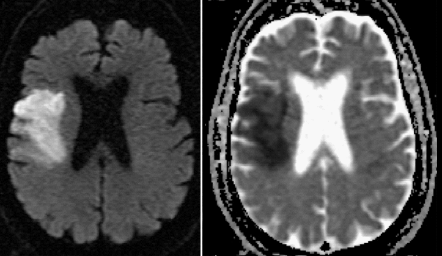
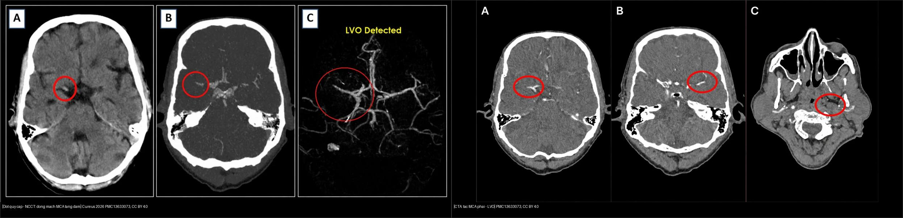
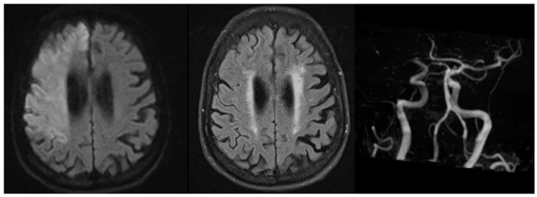
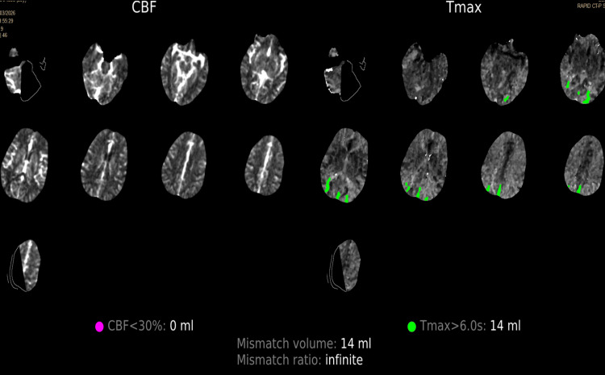

211 — Đột quỵ thiếu máu não: DWI/ADC & ASPECTS / Acute ischemic stroke
Tags: pattern:nhoi-mau vung:nao score:ASPECTS protocol:MRI-dot-quy
Mức chắc chắn (certainty): tổng hợp y văn (literature synthesis) — nhóm tự biên từ y văn mở, chưa gắn ca nguyên văn đơn lẻ.
1. Tổng quan — tắc mạch → phù độc tế bào → DWI sáng/ADC tối
- Tắc động mạch não (thường động mạch não giữa — MCA) → thiếu ATP → bơm Na/K thất bại → nước dồn vào trong tế bào (phù độc tế bào — cytotoxic edema) → khuếch tán (diffusion) nước bị hạn chế.
- TẠI SAO DWI sáng + bản đồ ADC (apparent diffusion coefficient) tối = nhồi máu cấp: proton nước không dịch chuyển tự do được → tín hiệu DWI (b=1000) tăng, giá trị ADC giảm. Cửa sổ sáng rõ nhất 24 giờ – 7–10 ngày; giai đoạn bán cấp (10–14 ngày) có hiện tượng giả bình thường hóa ADC (ADC pseudonormalization) trong khi DWI vẫn sáng do hiệu ứng T2 shine-through — luôn đối chiếu cặp DWI/ADC + FLAIR.
- Ngưỡng định lượng nằm lòng: lõi nhồi máu (core) ADC thường < 620 × 10⁻⁶ mm²/s**; cửa sổ tiêu sợi huyết tĩnh mạch (IV alteplase, rtPA) **≤ 4,5 giờ** nếu chưa tổn thương **> 1/3 diện tích MCA; lấy huyết khối cơ học (thrombectomy) ≤ 6 giờ, mở rộng tới 24 giờ nếu còn mô cứu được (DAWN/DEFUSE-3: core < 70 mL, mismatch ≥ 1,8, mismatch ≥ 15 mL).
2. Mẫu hình + chẩn đoán phân biệt theo vùng mạch (Gamut)
- Vùng MCA (động mạch não giữa): vỏ đảo (insula) + hạch nền + vỏ trán-đỉnh — liệt nửa người đối bên + thất ngôn (trái) / lơ là không gian (phải).
- Vùng ACA (động mạch não trước): mặt trong trán-đỉnh — yếu chân > tay.
- Vùng PCA (động mạch não sau): chẩm + đồi thị — bán manh (hemianopia) cùng bên.
- Hố sau (động mạch thân nền — vertebrobasilar): tiểu não/thân não — chóng mặt + thất điều + liệt dây thần kinh sọ chéo bên.
- Giả nhồi máu DWI+: áp-xe (mủ hạn chế trung tâm), lymphoma (tế bào dày đặc), Creutzfeldt-Jakob (vỏ + hạch nền đối xứng), viêm não herpes (thái dương trong 2 bên).
3. Bảng so sánh phân biệt (ma trận đối chiếu)
| Thực thể (entity) | Hình ảnh điển hình | Chốt vào (rule-in) | Chốt loại (rule-out) | Gợi ý xác nhận |
|---|---|---|---|---|
| Nhồi máu cấp MCA | DWI sáng + ADC tối theo vùng mạch, mất ranh giới xám-trắng, dấu insula mờ | DWI+/ADC− < 10 ngày + đúng vùng mạch | DWI sáng + ADC sáng (T2 shine-through) → không phải cấp | CTA/MRA tìm tắc, tưới máu (core/penumbra) |
| Áp-xe não | Vòng bắt thuốc mỏng đều + DWI trung tâm sáng mạnh | Hạn chế trung tâm + sốt + viêm | Vòng dày gồ ghề hoại tử → u | Phổ (lactate/amino acid), cấy máu |
| Lymphoma nguyên phát | Khối quanh não thất bắt thuốc đồng nhất, DWI sáng toàn khối | Đồng nhất + quanh não thất + ADC rất thấp | Hoại tử vòng dày → GBM | Steroid làm nhỏ giả, sinh thiết trước steroid |
| Giả T2 shine-through | DWI sáng + ADC sáng/bình thường (nhồi máu cũ, phù mạch) | ADC không tối | ADC tối → cấp thật | So ADC, FLAIR cũ/mới |
| Nhồi máu hố sau/thân nền | Tổn thương tiểu não/thân não, có thể nhỏ, khuất xương đá trên CT | DWI+/ADC− lát mỏng vùng hố sau + hội chứng chéo bên | CT bình thường + không DWI+ → không loại trừ, cần MRI | MRI DWI lát mỏng 3 mm; MRA thân nền |
| Bắt chước đột quỵ (stroke mimic) | NECT không tổn thương (ASPECTS 10) + CTA không tắc + CTP chất lượng kém/nhiễu | Thiếu khuyết thần kinh khu trú nhưng hình ảnh âm tính, có cử động/nhiễu | DWI+ đúng vùng mạch → nhồi máu thật | MRI muộn (DWI âm = không nhồi máu); theo dõi lâm sàng |

Trái: DWI b=1000 sáng vùng vỏ phải. Phải: ADC tối tương ứng = hạn chế khuếch tán cấp. Nguồn: Mirza & Gokhale 2016, CC BY 4.0.Dấu sớm NECT & ASPECTS — thang 10 điểm MCA (đọc chuẩn xác)
- Dấu tăng tỷ trọng động mạch não giữa (Hyperdense MCA sign): > 45–50 HU so với bên đối diện — cục huyết khối tươi trong lòng mạch.
- Mất phân biệt chất xám-trắng nhân bèo/thùy đảo: mỗi giờ thiếu máu đậm độ chỉ giảm ~2–3 HU nên BẮT BUỘC chỉnh cửa sổ đột quỵ (Stroke window: W: 40, L: 40 hoặc W: 8, L: 32) mới thấy dấu sớm.
- ASPECTS (Alberta Stroke Program Early CT Score): 10 trừ dần mỗi vùng MCA tổn thương sớm — 7 vùng ngang hạch nền: nhân đuôi (C), nhân bèo (L), bao trong (IC), thùy đảo (I), vỏ M1–M3; 3 vùng trên hạch nền: vỏ M4–M6. Ngưỡng hành động: ASPECTS ≥ 6 là chỉ định chuẩn lấy huyết khối cơ học; < 6 = lõi rộng, nguy cơ chảy máu sau tái thông cao.

Trái: NECT — động mạch MCA phải tăng đậm độ (vòng tròn), dấu sớm của huyết khối tươi. Phải: CTA — mất tín hiệu/không có dòng chảy ở MCA phải = tắc nhánh lớn (LVO). Nguồn: Cureus 2026, PMC13633073 Fig. 1–2, CC BY 4.0. Ảnh ghép letterbox, giữ nguyên tỷ lệ.4. Protocol chụp + hệ phân độ/điểm chuẩn hóa
- **CT không tiêm đầu tay (< 25 phút cửa-chụp) + cửa sổ đột quỵ W: 40, L: 40:** loại trừ xuất huyết + ASPECTS + dấu tăng tỷ trọng MCA > 45–50 HU.
- CTA mạch não + tưới máu CT/MR (cửa sổ 6–24 giờ theo DAWN/DEFUSE-3): tắc nhánh lớn (ICA/M1/basilar) + lõi nhồi máu (Core): CBF < 30% (hoặc DWI+) < 70 mL** + **vùng tranh tối tranh sáng (Penumbra): Tmax > 6 giây + mismatch ratio ≥ 1,8 và thể tích mismatch ≥ 15 mL → thrombectomy tới 24 giờ.
- MRI DWI/ADC + FLAIR: DWI+/FLAIR− = < 4,5 giờ (chỉ điểm tiêu sợi huyết khi giờ khởi phát không rõ).

*Bất tương hợp DWI–FLAIR (DWI-FLAIR mismatch): tổn thương đã hạn chế khuếch tán (DWI sáng) nhưng chưa tăng tín hiệu trên FLAIR → ước tính khởi phát < 4,5 giờ, dùng chọn bệnh nhân đột quỵ lúc ngủ dậy/không rõ giờ (WAKE-UP). Nguồn: J Clin Med 2024, PMC11477225 Fig. 1, CC BY 4.0.*
*Cạm bẫy: bản đồ tưới máu CT (CTP) cho khuyết thiếu không đặc hiệu, bị đọc là nhiễu do bệnh nhân cử động; NECT ASPECTS 10 + CTA không tắc → ca này cuối cùng là bắt chước đột quỵ (stroke mimic). CTP chỉ có giá trị khi chất lượng ảnh đủ và đối chiếu lâm sàng. Nguồn: Cureus 2026, PMC13283053 Fig. 1, CC BY 4.0.*flowchart TD
A[Nghi đột quỵ cấp] --> B{CT không tiêm: máu?}
B -->|Có máu| C[Theo bài xuất huyết 212]
B -->|Không máu| D{ASPECTS + CTA?}
D -->|LVO + core nhỏ| E[Thrombectomy ≤24h]
D -->|Không LVO + ≤4.5h| F[Tiêu sợi huyết IV]
D -->|Core rộng ASPECTS <6| G[Hồi sức + chống phù]
5. Biến thể bình thường và cạm bẫy
- T2 shine-through (DWI sáng + ADC sáng) đọc nhầm nhồi máu cấp — luôn đối chiếu ADC.
- Giả bình thường hóa ADC (10–14 ngày) bỏ sót nếu chỉ đọc ADC — cộng DWI + FLAIR (DWI vẫn sáng do T2 shine-through).
- Nhồi máu hố sau nhỏ khuất bóng xương đá trên CT — nghi ngờ thì MRI DWI lát mỏng.
- Hài lòng sớm (satisfaction of search): đã thấy tắc M1 đừng quên tắc tandem cổ + chảy máu chuyển dạng (hemorrhagic transformation).
6. Tự lượng giá — Blind Quiz
Ca 1 — Liệt nửa người trái cấp giờ thứ 3. Nhìn DWI/ADC trước.
- Gợi ý lâm sàng (clinical context): nam trung niên, liệt nửa người trái + lơ là không gian phải, khởi phát 3 giờ.
- Câu hỏi: Mô tả dấu hiệu (finding) chính? Đưa 3 chẩn đoán phân biệt (differential)? Dấu hiệu nào chốt (clincher)?
Bấm để hiện đáp án (findings + chẩn đoán)
- Dấu hiệu (findings): vùng vỏ-dưới vỏ bán cầu phải sáng DWI + tối ADC, theo phân bố MCA, phù nhẹ, chưa hóa FLAIR mạnh.
- Chẩn đoán (diagnosis): nhồi máu cấp MCA phải — vì DWI+/ADC− đúng vùng mạch < 10 ngày + lâm sàng đối bên.
- Nguồn ảnh: Mirza & Gokhale 2016 (SMGebooks), CC BY 4.0.
Ca 2 — Bệnh nhân yếu nửa người trái cấp, chụp NECT rồi CTA. Đọc phim trước:
- Gợi ý lâm sàng: khởi phát < 4,5 giờ, NIHSS 6, không rõ tiền sử.
- Hỏi: hai dấu hiệu sớm trên NECT/CTA là gì? Bước tiếp theo là gì?
Bấm để hiện đáp án (findings + chẩn đoán)
- Dấu hiệu (findings): trái — dấu tăng tỷ trọng động mạch MCA (> 45–50 HU); phải — tắc MCA trên CTA = tắc nhánh lớn (LVO). Luôn đọc NECT ở cửa sổ đột quỵ (W: 40 / L: 40) để không bỏ lỡ dấu sớm.
- Chẩn đoán (diagnosis): nhồi máu cấp MCA có LVO — chỉ định tiêu sợi huyết IV (< 4,5 giờ) + chuyển lấy huyết khối cơ học.
- Chốt: tăng tỷ trọng MCA + tắc trên CTA; đánh thêm ASPECTS trước khi quyết định.
- Nguồn ảnh: Cureus 2026 (PMC13633073) Fig. 1–2, CC BY 4.0.
Ca 3 — Bệnh nhân thức dậy thấy yếu nửa người, không rõ giờ khởi phát. MRI:
- Hỏi: dấu hiệu này nghĩa là gì? Có tiêu sợi huyết được không? Vì sao?
Bấm để hiện đáp án (findings + chẩn đoán)
- Dấu hiệu (findings): DWI sáng (đã hạn chế khuếch tán) nhưng FLAIR chưa tăng tín hiệu = bất tương hợp DWI–FLAIR.
- Chẩn đoán (diagnosis): nhồi máu cấp, khởi phát ước tính < 4,5 giờ → đủ điều kiện tiêu sợi huyết dù không rõ giờ khởi phát (dựa trên thử nghiệm WAKE-UP: mRS 0–1 90 ngày 53,3% vs 41,8%, aOR 1,61).
- Chốt: DWI+/FLAIR−; nhớ cạm bẫy giả bình thường hóa ADC 10–14 ngày (DWI vẫn sáng do T2 shine-through).
- Nguồn ảnh: J Clin Med 2024 (PMC11477225) Fig. 1, CC BY 4.0.
Ca 4 — Bệnh nhân rối loạn ngôn ngữ nặng, chụp CTP nhưng cử động nhiều. ASPECTS 10, CTA không tắc. CTP:
- Hỏi: khuyết thiếu tưới máu này có đáng tin? Hướng chẩn đoán? Xử trí ra sao khi hình ảnh "âm tính"?
Bấm để hiện đáp án (findings + chẩn đoán)
- Dấu hiệu (findings): khuyết thiếu tưới máu không đặc hiệu, bị dựng hình do cử động/nhiễu; ASPECTS 10 + CTA không tắc.
- Chẩn đoán (diagnosis): khuyết thiếu không đặc hiệu — ca gốc cuối cùng là bắt chước đột quỵ (stroke mimic), nghĩ migraine có aura ngôn ngữ (HaNDL loại trừ); MRI muộn bình thường.
- Xử trí: khiếm khuyết nặng + trong cửa sổ + hình ảnh hạn chế, có thể vẫn tiêu sợi huyết rồi định hướng lại chẩn đoán sau cấp; không dựa vào CTP chất lượng kém để chốt.
- Chốt: DWI âm muộn = không nhồi máu; luôn đối chiếu chất lượng ảnh + lâm sàng.
- Nguồn ảnh: Cureus 2026 (PMC13283053) Fig. 1, CC BY 4.0.
Ca 5 — ASPECTS 4 + tắc M1 giờ thứ 5 (không ảnh): thrombectomy hay nội khoa? Vì sao? (Bảng mục 3 + mục 4.)
Bấm để hiện đáp án (findings + chẩn đoán)
- Dấu hiệu (findings): lõi rộng (ASPECTS < 6) = > 1/3 lãnh thổ MCA đã chết.
- Chẩn đoán (diagnosis): lõi rộng, nguy cơ chảy máu sau tái thông cao — đa số chuyển hồi sức/chống phù, hội chẩn cá thể thay vì thrombectomy thường quy (lưu ý các thử nghiệm lõi rộng gần đây chọn bệnh nhân theo thể tích lõi chứ không chỉ ASPECTS).
Bài liên quan chéo
- 200 – Tổng quan Thần kinh
- 212 – Xuất huyết sọ (loại trừ máu trước tiêu sợi huyết)
- 213 – U não (DWI+ giả nhồi máu: lymphoma/áp-xe)
- 216 – Huyết khối xoang tĩnh mạch não (CVST) (nhồi máu tĩnh mạch — bối cảnh khác)
- 221 – Chấn thương cột sống (mạch máu cổ — tắc tandem)
Ảnh
211_nhoi-mau_DWI_Wikimedia-Mirza-CCBY40.png— Mirza & Gokhale, SMGebooks 2016, CC BY 4.0.211_hyperdense-MCA-CTA_CT_PMC13633073-Fig1-CCBY.jpg,211_tac-MCA_LVO_CTA_PMC13633073-Fig2-CCBY.jpg,composite_hyperdense-MCA-vs-CTA.jpg— Cureus 2026 (PMCID: PMC13633073), CC BY 4.0.211_DWI-FLAIR-mismatch_MRI_PMC11477225-Fig1-CCBY.jpg— J Clin Med 2024 (PMCID: PMC11477225), CC BY 4.0.211_tuoi-mau-CTP_PMC13283053-Fig1-CCBY.jpg— Cureus 2026 (PMCID: PMC13283053), CC BY 4.0.- Chi tiết giấy phép từng ảnh trong
images/CREDITS.md. AuntMinnie: chỉ dẫn link, không tải.
Không dùng để chẩn đoán độc lập khi chưa có người hướng dẫn.